Forecast Custom Scores using a Notebook
Use an instructor provided notebook and demo data to create a Health score group and associate it to a score type like Health, Risk, Criticallty, End of Life. Calculate the current scoring and future forecasted scores using an historical score values provided in a csv file. Learn also how to extract future scores from third party for each asset. These instructions will be based off using the:
1.3_Create-ST-SG_FutureScores.ipynbfile with the ST demo data which included inhpu_csv_demoorhpu_csv_stdata set at github.ibm.com/Watson-IoT/eam-hpu-lab``.
In this exercise you will use Watson Studio, MAS Health and Predict Utilities to:
- Upload the and Run the HPU Health Score Group notebook to create score group using forecast notebook template from
https://github.ibm.com/Watson-IoT/eam-hpu-lab/notebooks. - Confirm Scoring groups have been created and scores have been calculated
- Handle Errors that may come up in the process
This notebook can only be run once per environment per site with the same set of assets.
Pre-requisites
- Ensure you have access to asset data files for the MAS Health and Predict Utilities Demo Data
- Ensure you have loaded the hpu_csv_demo data or hpu_csv_st into the Health and Predict Utilities system by completing the Load Data into Manage lab for the Utilities data.
- Upload future notebook cfg file in HPU project as a data asset. Upload
IBM-future-score-from-csv-sample-6.0.0-demo.cfgfromhttps://github.ibm.com/Watson-IoT/eam-hpu-lab/notebooksto HPU project. 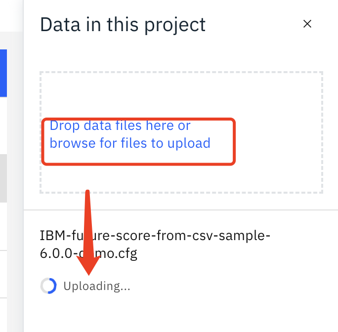 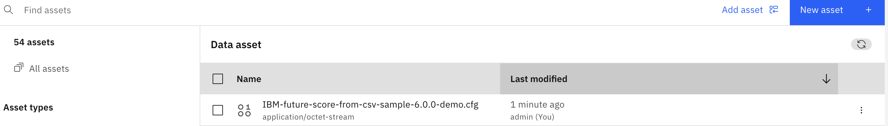
Upload future notebook HPU project.
-
Upload the
Create Substation Transformer Future Scoresnotebook from the github in thehttps://github.ibm.com/Watson-IoT/eam-hpu-lab/notebooksto your project. -
Click 'New asset' button in the project, and filter for notebook type.

-
Choose notebook type

-
Select the
IBM-future-score-from-csv-sample-6.0.0-demo.ipynbnotebook, and then clickCreatebutton. 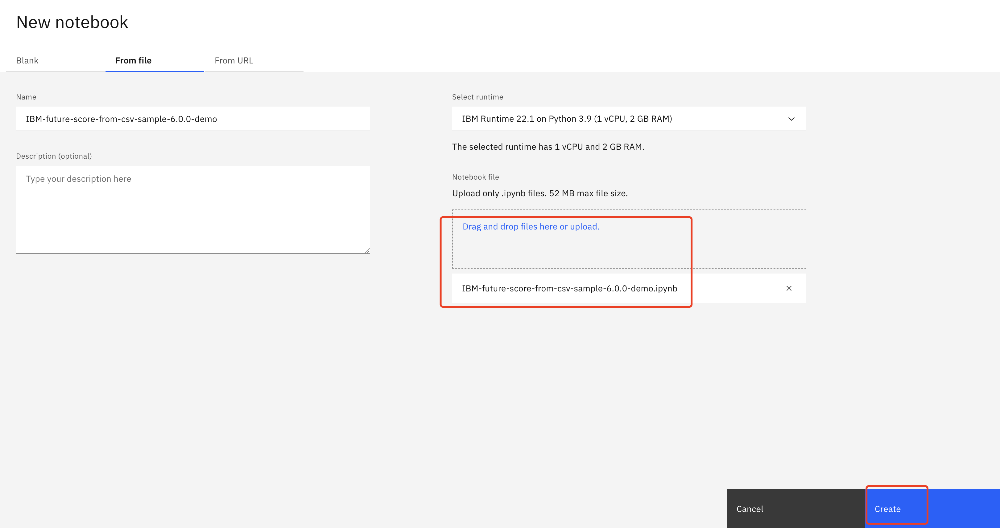 -
Save the notebook to a latest version.
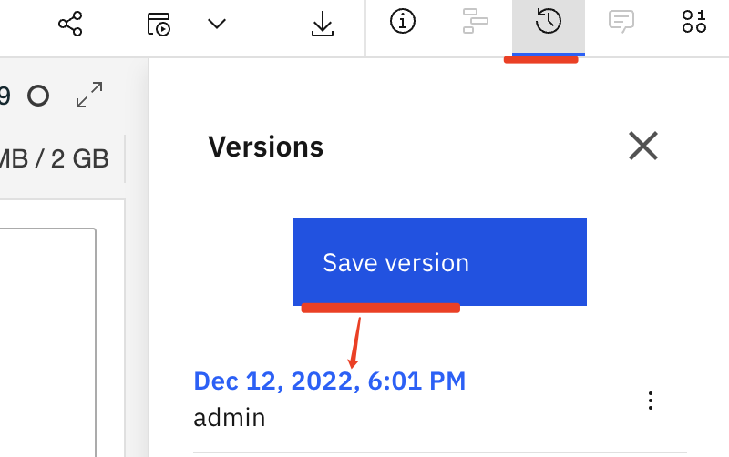 -
Create a job named
Run-IBM-future-score-from-csv-sample-6-0-0-demofor the notebook. 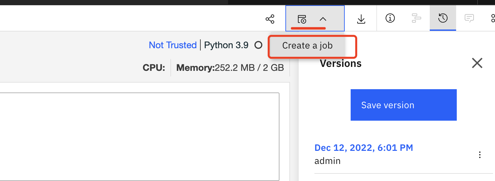 -
Click Next, Next, Next, then Create. 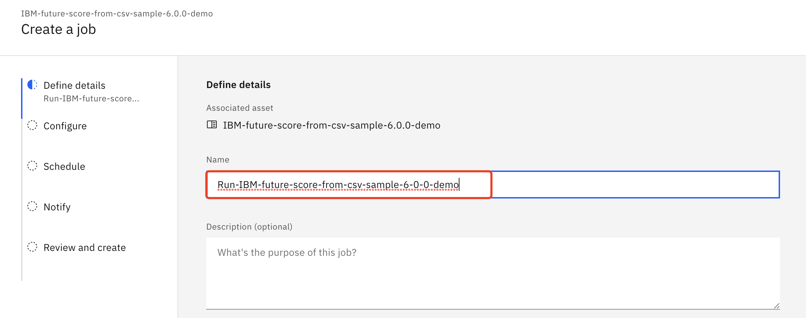
-
A
Pop upmessage will show indicate the job is created successfully.
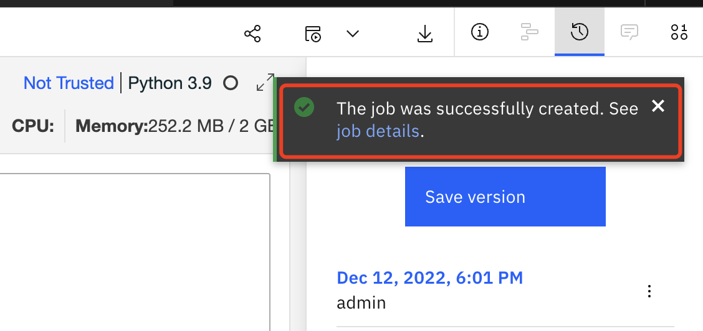 -
The forecast notebook
cfgfile and notebook should upload to the configured project for HPU.
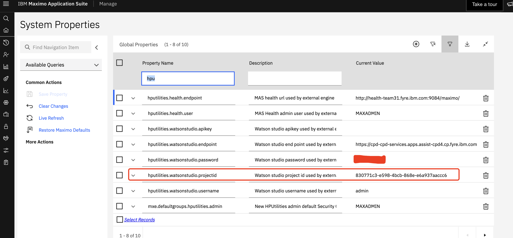
Note
Check the project id after entering a project to ensure that's the same one that's configured in system properties for HPU. 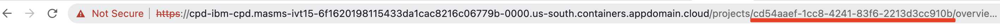
Upload Files and run the Data Loader Notebook
-
Upload the
Create Substation Transformer Future Score Groupsnotebook provided by the instructor from the github repository to your project.
ClickNew assetbutton in the project, and filter for notebook type. Select the1.3_Create-ST-SG_FutureScores.ipynbnotebook, and then clickCreatebutton. Refer to the instructions in Upload future notebook HPU project -
Click on the
pencilicon next to your notebook to open it in edit mode. -
If the notebook fails to start, restart it. Click on the
iicon ,Environmenttab,Running statusdropdown select box and chooseRestart
-
Run the first code cell to import packages.
-
Fetch MX_BASE_URL and MX_APIKEY as instructued below and store it as HPU_Envs.json file in below format, then upload to ws project(If it's already prepared in previous exercises, skip this step).
{ "Instruction":{ "MX_BASE_URL":"Extract health or manage host, and replace * in https://*/maximo/, e.g Get main.manage.ivt13rel88.ivt.suite.maximo.com from https://main.manage.ivt13rel88.ivt.suite.maximo.com/maximo/oslc/graphite/relengineer/index.html", "MX_APIKEY":"Application Administration -> Go To Administration -> Integration -> API Keys -> Copy key from admin user card or add an API key if does not exist. }, "MX_APIKEY":"****", "MX_BASE_URL":"http://health-team31.fyre.ibm.com:9084/maximo/" }
-
Update the site id value to your
SITE_IDin the second cell. -
Run the next cell to define the API call for Maximo.
-
Run the next 3 cells to define function to create the following:
-
The query that will be used to build the health scores.
-
Get the scores list and activate the scores.
-
Create the asset group, create scores for the asset group and clean up.
-
Run the next cell to create the query for the
Asset Scoring Group. This query will be made up ofAsset TypeandSite IDandprefix. -
Clean up and then create the
Asset Scoring Groupusing the query from the previous cell. Build the scores with future notebook, and activate the scores, trigger the calculation. Wait for 5 minutes for the calculation to finish.
Confirm Score Group and Scores
To confirm if the Score Group and Scores were created do the following:
-
Navigate to
Maximo Health and Predict for Utilitiesfor the provided environment. -
Go to the
Scoring and DGA Settingsapplication within Maximo Health and Predict - Utilities. -
Search for your
OrgorSite. Notice that there is a score group created forSubstation Transformer Assets. 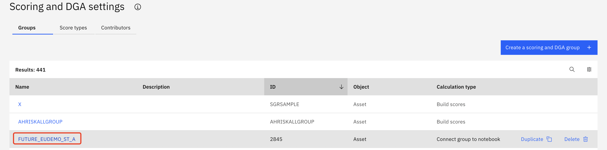 -
Click into the
Score Groupand notice all theScore Typescreated via the notebook listed in theGroup Detailssection, and how it's connected to the future notebook.
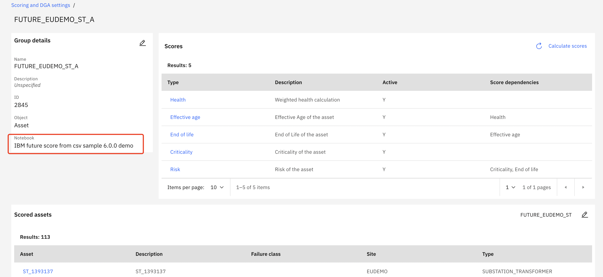 -
Click into any asset and see that the scores have calculated.
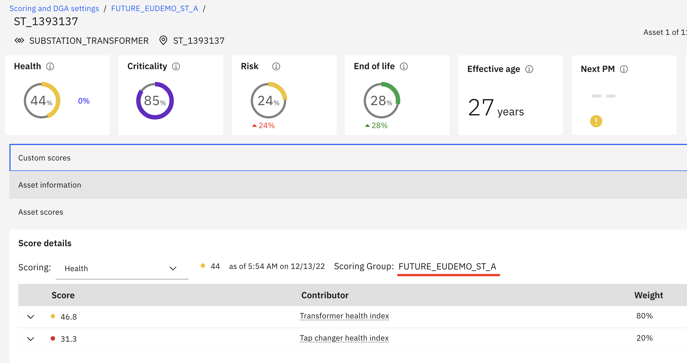 -
Check future scores in
Matrix Page. Go toAssetspage, select the same query that is used in score group. Click theMatrixicon to switch to Matrix page.

-
Click
year plusbutton to check the summary information for future year, like 2023.
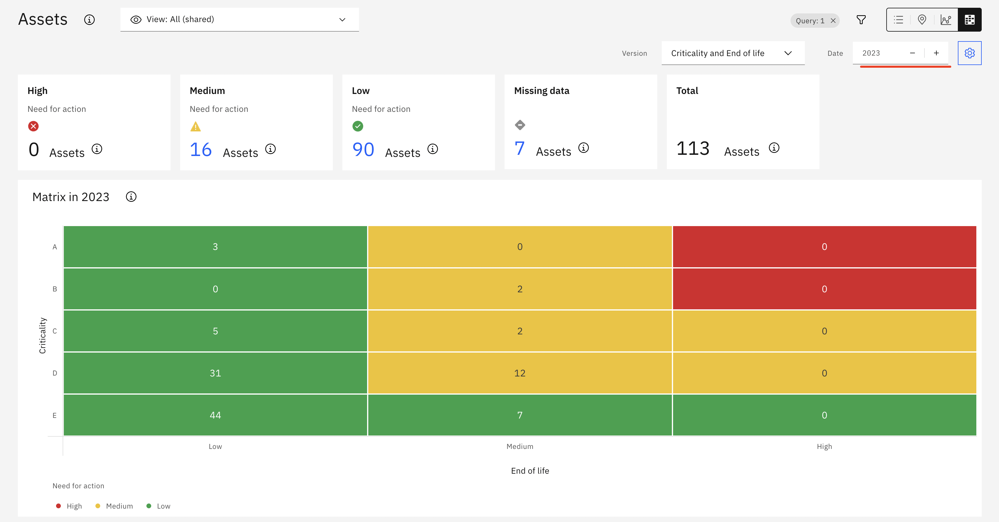 -
Click any cell to drill in to see the related assets in a table view. Click
year plusbutton to see which assets are in this range in next year and show the next year score values in the table.
Congratulations you have learned how to use a notebook to create future score forecasts and verified the future scores in Matrix appeared.
In the next exercise you will learn how to train a WML model to forecast future score for each asset using the registered WML model in a notebook.